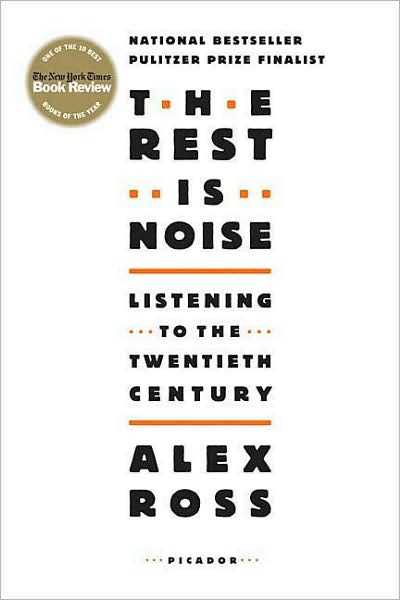

Since the beginning of last week, I've been reading
The Rest is Noise: Listening to the Twentieth Century, the first novel of
New Yorker music critic Alex Ross. As hinted by the title, the book is a chronological examination of the politics and society surrounding different parts of twentieth-century Europe and America, as expressed in the works of the composers who lived during these often tumultuous times.
The book has certainly made its mark on the musicological world since its 2007 publication. In 2013, London's Southbank Centre hosted
a year-long exhibition inspired by
The Rest is Noise, featuring lectures on the forces that shaped the works of major twentieth century composers, interviews with people who lived in the various eras of twentieth century music (including modern-day composers and musicians), as well as a great number of performances of twentieth century works, presented by renowned musicians from all around the world. Furthermore, as the book cover proudly states,
The Rest is Noise was chosen as one of
The New York Times'
top 10 books of the year for 2007.
My personal relationship with
The Rest is Noise goes back to my first year of college, as it was the first assigned textbook that I used for my first undergraduate class. That course, titled Music and Politics in Europe since Wagner, focused primarily on a select number of composers from two primary center of twentieth-century upheaval in Germany and the Soviet Union, composers such as Mahler, Shostakovich, and Kurt Weill. Nevertheless, Ross' work was used in the class for more contextual learning. The assigned readings from
The Rest is Noise were enough to want me to read the work cover-to-cover; sadly, for the next four years, I never got around to doing it. Finding myself now with a little more downtime than before, I dug this book out and will hopefully make my old goal a reality.
For this first post, I figure that I should give an explanation as to why I've created this page.
When I was around 3 years old (being almost 20 years ago the exact details of this story are hazy), my parents placed a cello in my hands, brought me to a private music instructor, and told us to have at it. The results were less than satisfactory: a half hour and $50 of my parent's money was spent watching me lay on the floor, flatly refusing (in the aurally and visually pleasant style of a 3 year old) to be taught.
I did this twice.
Four years later, my primary school's music program motivated my parents to try me again with the cello and learn the instrument in a less rebellious manner. What followed was what has been a fascinating journey, one that has included adding the piano at age 9, being a member of one of the
finest youth orchestras in the United States, playing in other numerous fabulous ensembles, and having the privilege of being taught by a number of renowned instructors and performers.
The earliest memory I have as a music listener is listening at the age of 5 to Christy Moore's folk project Planxty and their compilation
The Planxty Collection (Polydor, 1976) on a bootleg CD in my dad's car during a long road trip to Louisville, Kentucky (more on that entire adventure perhaps later). I guess one could say that this, too, triggered a sequence of one thing leading to another: being fed a steady diet of Beethoven, Mozart, and Nick Cave up to the age of 15, diving into the world of YouTube music videos
(a particular favorite of mine), and, finally, jumping into Spotify and its bottomless pit of licensed music.
What I intend for this blog to be is nothing more than something to show that music has been, and continues to be, a major part of my life. While this may sound a bit blunt, it's a simple a truth that I'll never deny. Moving forward, I'd like to add musical material to this page from different perspectives: as a listener, as a performer, and as a creator. Hopefully I can also transcend from this barebones blog look sooner or later.
In the meantime, feel free to take a look at what music I've been listening to this month at the bottom of this page. I update the playlist very frequently (switching it out entirely when the new month rolls around), and I hope that perhaps you'll pick out a tune and share in my joy of discovery.
Check out what I'm listening to right now! This playlist contains music I've discovered this month. Enjoy!